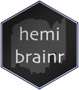

The goal of hemibrainr is to provide useful code for preprocessing and analysing data from the Janelia FlyEM hemibrain project. It makes use of the natverse R package, neuprintr to get hemibrain data from their connectome analysis and data hosting service neuprint. The dataset has been described here. Using this R package in concert with the natverse ecosystem is highly recommended.
Tutorial
To help you get to grips with neuprintr, we have made a tutorial in classic presentation form. This tutorial uses data from the Janelia Fly EM team’s hemibrain project. You can also see the vignettes in this package for the same examples and more.
Authentication
In order to use neuprintr, which fetches data we want to use with hemibrainr, you will need to be able to login to a neuPrint server and be able to access it underlying Neo4j database.
You may need an authenticated accounted, or you may be able to register your @gmail address without an authentication process. Navigate to a neuPrint website, e.g. https://neuprint.janelia.org, and hit ‘login’. Sign in using an @gmail account. If you have authentication/the server is public, you will now be able to see your access token by going to ‘Account’:

To make life easier, you can then edit your .Renviron file to contain information about the neuPrint server you want to speak with, your token and the dataset hosted by that server, that you want to read. A convenient way to do this is to do
and then edit the file that pops up, adding a section like
neuprint_server="https://neuprint.janelia.org"
# nb this token is a dummy
neuprint_token="asBatEsiOIJIUzI1NiIsInR5cCI6IkpXVCJ9.eyJlbWFpbCI6ImIsImxldmVsIjoicmVhZHdyaXRlIiwiaW1hZ2UtdXJsIjoiaHR0cHM7Ly9saDQuZ29vZ2xldXNlcmNvbnRlbnQuY29tLy1QeFVrTFZtbHdmcy9BQUFBQUFBQUFBDD9BQUFBQUFBQUFBQS9BQ0hpM3JleFZMeEI4Nl9FT1asb0dyMnV0QjJBcFJSZlI6MTczMjc1MjU2HH0.jhh1nMDBPl5A1HYKcszXM518NZeAhZG9jKy3hzVOWEU"Make sure you have a blank line at the end of your .Renviron file. For further information try about neuprintr login, see the help for neuprint_login().
Finally you can also login on the command line once per session, like so:
conn = neuprintr::neuprint_login(server= "https://neuprint.janelia.org/",
token= "asBatEsiOIJIUzI1NiIsInR5cCI6IkpXVCJ9.eyJlbWFpbCI6ImIsImxldmVsIjoicmVhZHdyaXRlIiwiaW1hZ2UtdXJsIjoiaHR0cHM7Ly9saDQuZ29vZ2xldXNlcmNvbnRlbnQuY29tLy1QeFVrTFZtbHdmcy9BQUFBQUFBQUFBDD9BQUFBQUFBQUFBQS9BQ0hpM3JleFZMeEI4Nl9FT1asb0dyMnV0QjJBcFJSZlI6MTczMjc1MjU2HH0.jhh1nMDBPl5A1HYKcszXM518NZeAhZG9jKy3hzVOWEU")This is also the approach that you would take if you were working with more than two neuPrint servers.
Example
Let’s get started with a useful function for splitting a neuron into its axon and dendrite:
# Choose neurons
## These neurons are some 'tough' examples from the hemibrain:v1.0.1
### They will split differently depending on the parameters you use.
tough = c("5813056323", "579912201", "5813015982", "973765182", "885788485",
"915451074", "5813032740", "1006854683", "5813013913", "5813020138",
"853726809", "916828438", "5813078494", "420956527", "486116439",
"573329873", "5813010494", "5813040095", "514396940", "665747387",
"793702856", "451644891", "482002701", "391631218", "390948259",
"390948580", "452677169", "511262901", "422311625", "451987038"
)
# Get neurons
neurons = neuprint_read_neurons(tough)
# Now make sure the neurons have a soma marked
## Some hemibrain neurons do not, as the soma was chopped off
neurons.checked = hemibrain_skeleton_check(neurons, meshes = hemibrain.rois)
# Split neuron
## These are the recommended parameters for hemibrain neurons
neurons.flow = flow_centrality(neurons.checked, polypre = TRUE,
mode = "centrifugal",
split = "distance")
# Plot the split to check it
nat::nopen3d()
nlscan_split(neurons.flow, WithConnectors = TRUE)Data
- HemiBrain (hemibrain:v1.0) : from “A Connectome of the Adult Drosophila Central Brain” (Xu, et al. 2020)
Acknowledging the tools
neuPrint comprises a set of tools for loading and analyzing connectome data into a Neo4j database. Analyze and explore connectome data stored in Neo4j using the neuPrint ecosystem: neuPrintHTTP, neuPrintExplorer, Python API.
This package was created by Alexander Shakeel Bates and Gregory Jefferis. You can cite this package as:
Bates AS, Jefferis GSXE (2020). hemibrainr: Code for working with data from Janelia FlyEM’s hemibrain project. R package version 0.1.0. https://github.com/flyconnectome/hemibrainr